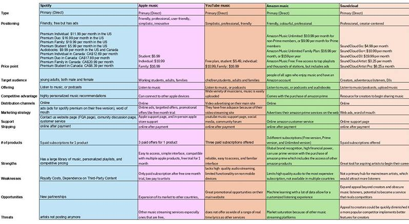
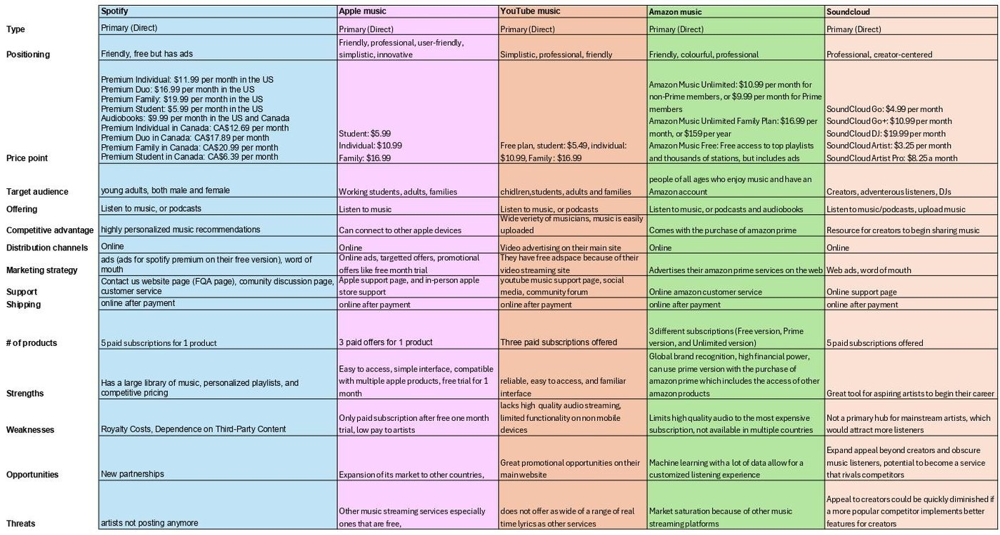
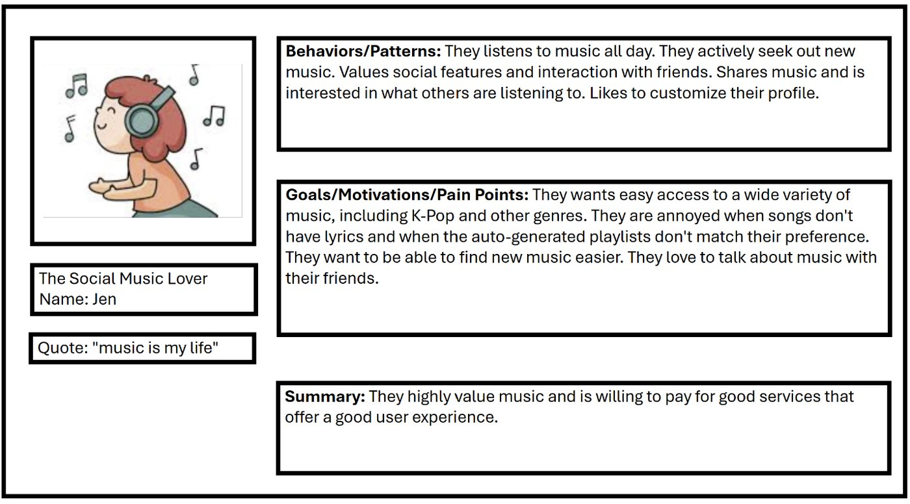
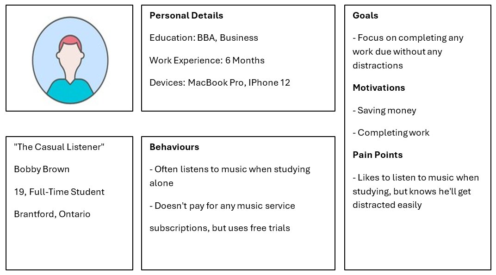
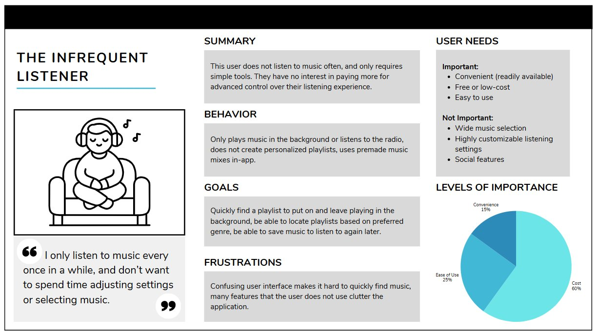
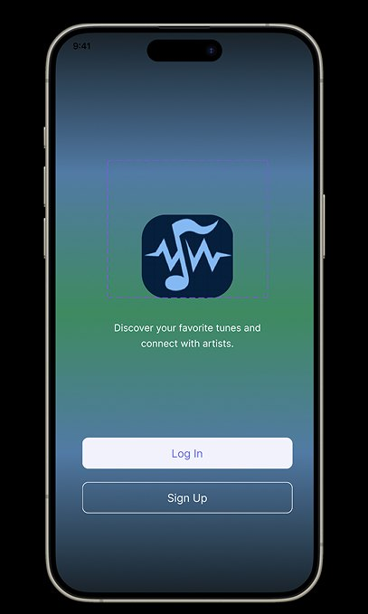

Product Design
Zinger Music App
A music streaming app built to fix what Spotify users complain about most, designed around real survey data instead of assumptions.
Role
UX Researcher & Designer
Team
Hannan, Nathan Legrand, Solomon Chung, Logan Coombs, Aaron Pham, Owen Hall Lalonde
Course
UX 103: UX Strategy, Dr. Sadeem Qureshi
Tools
Figma, Google Forms, paper prototyping
The Challenge
Music streaming users were unhappy with pricing, ads, and recommendations, but stayed with Spotify anyway because of years of built-up playlists.
My Approach
Surveyed 700+ students, interviewed 5 in depth, audited five competitors, built three personas, and ran two rounds of usability testing with the same participants.
The Result
An interactive prototype where every major change traces back to a specific participant quote, including a persistent play bar and a dedicated song page.
My Contribution
Team of 6 in UX 103. I contributed to the competitive analysis, the research plan and survey design, the persona work, and both usability testing rounds.

Competitive Analysis
We benchmarked against Spotify, Apple Music, YouTube Music, Amazon Music, and SoundCloud before designing anything, to find where the market was actually leaving users unsatisfied.

Research Method
- A 6-question survey emailed to 700+ students on Laurier's MyLearningSpace list, 15 responses
- 5 in-depth interviews with young adults (18–25) using 10 questions on habits, pain points, and pricing
- Combined quantitative (usage patterns) with qualitative (satisfaction, feature gaps) data
Survey Results
- 80% of respondents currently use Spotify, 20% Apple Music
- 80% listen mainly on phone, 33% in the car, 18% on laptop
- Most listen while relaxing; top genres were Rock, Pop, and Rap
- Spotify's own AI playlist feature rated a middling 3.4 out of 5
What Interviews Revealed
- Consistent frustration with premium pricing and "insufferable" ad volume on free tiers
- Users stayed on Spotify anyway, because built-up playlists and Spotify Wrapped created real lock-in
- Recurring complaints: wrong lyrics, weak smart-shuffle recommendations, CarPlay bugs
- Requested: a better lock-screen mini-player, more community features, ability to upload own music
Personas Built From the Data
- The Social Music Lover, who wants to share music with friends and discover new genres through people, not just algorithms
- The Casual Listener, a student who wants cheap, low-distraction background music for studying
- The Infrequent Listener, who wants something cheap and simple, with no complicated features to learn
Putting it in front of people
The same 5 participants tested both rounds, first walking through a paper prototype and then an interactive Figma build, so round two could measure whether round one's fixes actually worked.
Round 1: Paper Prototype
Participants walked through creating a playlist, using AI playlist generation, and searching for an artist page. Feedback: recently-played music was hidden behind an extra click and left awkward empty space, and the menu page felt oversized and cluttered.
Fix: Home Screen & Menu
Recently Listened, Weekly Recommendations, and Always on Repeat were surfaced directly on the home screen instead of hidden. The menu was condensed into a hamburger dropdown instead of a full oversized page.
Round 2: Interactive Figma Prototype
Participants repeated the original three tasks, then tested five new ones: commenting on a song, editing a profile, adding a friend, adding albums to a library, and reordering a playlist. New feedback: no persistent play bar, and no dedicated "now playing" page.
Fix: Persistent Player & Song Page
Added a play bar fixed at the bottom of every screen (play/pause, skip, loop, shuffle) that also surfaces on the phone's lock screen, plus a dedicated now-playing page with lyrics, artist profile, queue, and community comments.
Who I designed for
Three personas built directly from the survey and interview data, each representing a different relationship with music.

Jen, The Social Music Lover. Listens all day and actively seeks out new music. Her frustrations were specific: songs missing lyrics, and auto-generated playlists that don't match what she actually wants. She's the reason the community features and the lyrics page exist.

Bobby Brown, The Casual Listener. A 19-year-old student who listens while studying, doesn't pay for a subscription, and uses free trials. His pain point is distraction: he wants music on in the background without the app pulling his attention.

The Infrequent Listener. Weights cost at 60% of what matters, ease of use at 25%, convenience at 15%, and explicitly does not care about wide music selection or social features. This persona is why the free tier and the low-friction entry point had to work properly, not just exist.
What the research told me
What the survey and interviews made unavoidable.
Insight 01
Lock-in beats satisfaction
People stayed on Spotify despite real complaints, purely because of Wrapped and years of playlists. That's a switching-cost problem, not a UI problem.
Insight 02
Ads and pricing are the open wound
Consistent frustration with premium pricing and "insufferable" ad volume on free tiers came up in every interview.
Insight 03
The mini-player matters more than expected
A better lock-screen player was one of the most requested features, which shaped the persistent play bar.
Exploring the options
Features were chosen against what five competitors already do well and badly.
Feature Set Considered
- Library, subscription plans, community posting and sharing, reviews, account personalization, explore and search, cross-platform support, and an events tab
What Shaped The Choice
- Community and social features, because Spotify's lock-in is social (Wrapped, shared playlists) and the Social Music Lover persona wanted discovery through people
- A persistent lock-screen player, because it was directly requested in interviews
- Simple, cheap, low-friction access for the Casual and Infrequent Listener personas
How the design changed
Paper prototype interactive Figma build, with the same 5 participants testing both.
After the Paper Round
- Recently Listened, Weekly Recommendations, and Always on Repeat surfaced directly on the home screen instead of hidden behind a click
- The oversized menu page condensed into a hamburger dropdown
After the Figma Round
- Added a persistent play bar (play/pause, skip, loop, shuffle) fixed at the bottom of every screen and surfaced on the lock screen
- Added a dedicated now-playing page with lyrics, artist profile, queue, and community comments
Where the solution landed
The onboarding screen sets the tone: no forced signup wall, and a clear statement of what the app is for.

Design Decisions
- The tagline states both halves of the concept up front, discovering music and connecting with artists, rather than making users infer it
- Log In and Sign Up are given equal visual weight, so returning users aren't pushed through a signup flow they don't need
- The gradient and centred logo keep the first screen calm, matching the "relaxing" listening context most survey respondents described
Designing for everyone
Designed around students who mostly listen on their phone while doing something else.
What Was Built In
- A persistent, always-reachable play bar so core controls never require navigating away from the current screen
- Lock-screen controls so the app is usable without unlocking the phone
- A dedicated now-playing page with lyrics, addressing the missing and incorrect lyrics complaint from interviews
What came out of it
An interactive Figma prototype refined across two full rounds of usability testing, with every major change traceable back to a specific participant quote rather than a guess about what "felt right."
What I learned
The interview finding that stuck with me most wasn't a feature request. It was that people stayed on Spotify despite real complaints, purely because of Wrapped and years of built-up playlists. That's not a UX problem you can wireframe your way out of. It reframed the whole project for me: we weren't just designing a better music app, we were designing against genuine switching costs, which is a much harder problem than a cleaner interface.